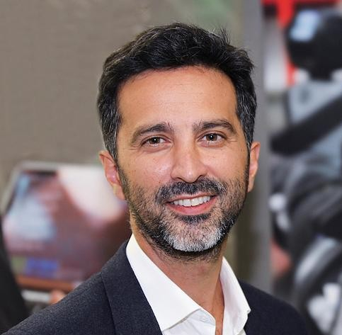

What Video Models Learn
Dynamics, affordances, physical constraints, task structure, visual intelligence, and the limits of learned world knowledge.
What world knowledge emerges from video pretraining, how can we evaluate it, and how can it enable reasoning, planning, and action?
Video models are rapidly moving from plausible clip generators toward systems that encode structured knowledge about objects, dynamics, physical interactions, actions, and environments. Prompted with nothing but images and text, large video models can segment objects, detect edges, edit images, and solve visual puzzles they were never trained on; lightly adapted, they become data-efficient learners for abstract visual reasoning; and they can act as simulators and planners for decision making. Yet they also produce realistic clips while failing basic physical tests. Language models went through the same stage: they began as text generators and, once probed and prompted, turned out to be general-purpose learners. We believe video models are at the same point for vision.
This workshop brings together researchers in video generation, world modeling, representation learning, robotics, planning, and evaluation to study what large-scale video models actually learn about the world, and how that knowledge can be measured and put to use beyond generating video.
Previous workshops on world models asked how to build world models, or how good their outputs look. We ask what a pretrained video model already knows, and how to use that knowledge the way the community learned to use the knowledge inside language models. The video model is the object of study rather than the product.
More specifically, this workshop focuses on:
Dynamics, affordances, physical constraints, task structure, visual intelligence, and the limits of learned world knowledge.
Probes, benchmarks, counterfactual tests, interventions, and failure analyses that separate reusable structure from surface correlations.
Interactive generation, planning, visual reasoning, robot learning, task adaptation, and decision making from observation.
Objectives, architectures, conditioning modalities, memory mechanisms, data curricula, adaptation methods, and scaling.
Generalization across domains, environments, tasks, interaction conditions, action spaces, and long temporal horizons.
Datasets, demos, benchmarks, early-stage work, position papers, and negative results for video models and world knowledge.
Objects, agents, actions, dynamics, affordances, physical constraints, and temporal structure.
Probes, benchmarks, counterfactual tests, and failure analyses for reusable world knowledge.
Visual reasoning, planning, interactive generation, learning from observation, task adaptation, and robotics.
Objectives, architectures, conditioning, memory, data curricula, adaptation, and scaling.
All seven invited speakers have confirmed. They bring perspectives from video generation, world modeling, planning, autonomous systems, evaluation, and reinforcement learning.

EPFL
Stanford University
Stealth startup, ex-NVIDIA
Odyssey
Microsoft Research
Google DeepMind
NYU Courant & Google DeepMind
Panel: Panelists selected from our invited speakers discuss how video models could be used the way language models are used today. Will a language model still be needed, or will video models reason on their own? Are the two complementary, should a language model be the interface to a video model, or will a single multimodal intelligence emerge?
The one-day format is being finalized. Details on invited talks, contributed work, posters, and moderated discussion will be announced soon.
Regular papers: up to 4 pages excluding references, with an optional appendix. Tiny papers: up to 2 pages excluding references, for late-breaking results, re-analyses, and fresh perspectives. Both tracks are submitted through OpenReview and are non-archival.
Original research, benchmarks, datasets, negative results, and position papers on what video models learn about the world, how to evaluate it, and how to use it.
Each submission will receive at least two human reviews, with conflicts handled through OpenReview and organizer checks. Regular papers also receive one clearly labelled AI review; decisions are made by human organizers. AI systems may not be primary authors, and tiny papers must be primarily human-authored; tiny papers receive human reviews only.
The workshop is intended for ongoing and new work, not for work already published at major machine-learning or adjacent venues, including the ICLR 2027 main track. Work under review elsewhere is welcome. Six papers will be selected for oral presentations, and best paper and best tiny paper awards will be given.
Submission deadline for regular and tiny papers (11:59 PM AoE).
All authors notified; accepted papers public on OpenReview (11:59 PM AoE).
Talk titles, abstracts, and the oral program posted on this website.
One-day, in-person workshop in San Francisco on one of the two ICLR workshop days.